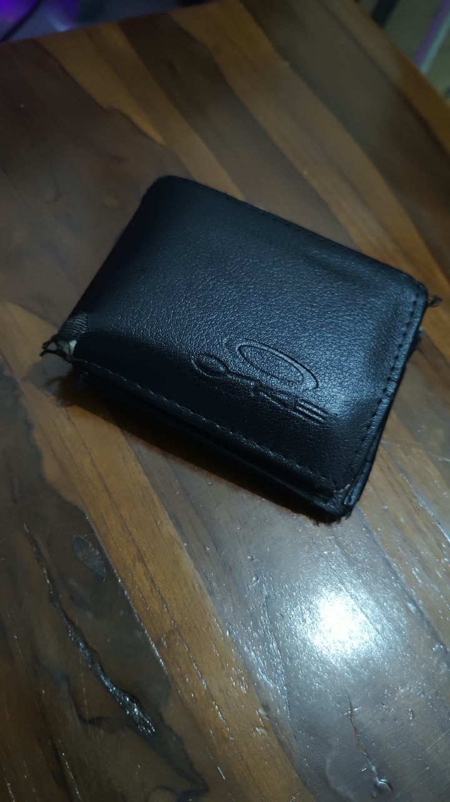
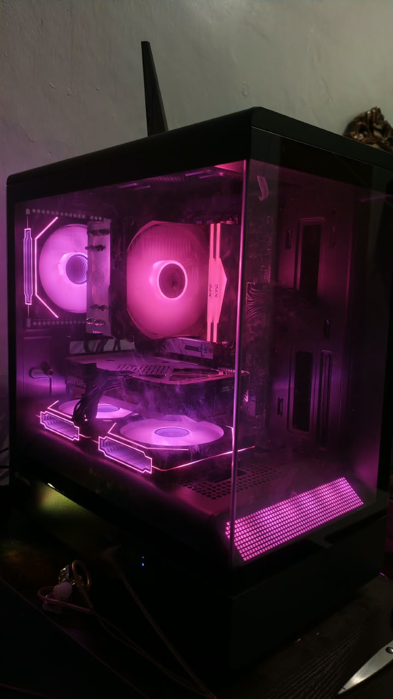
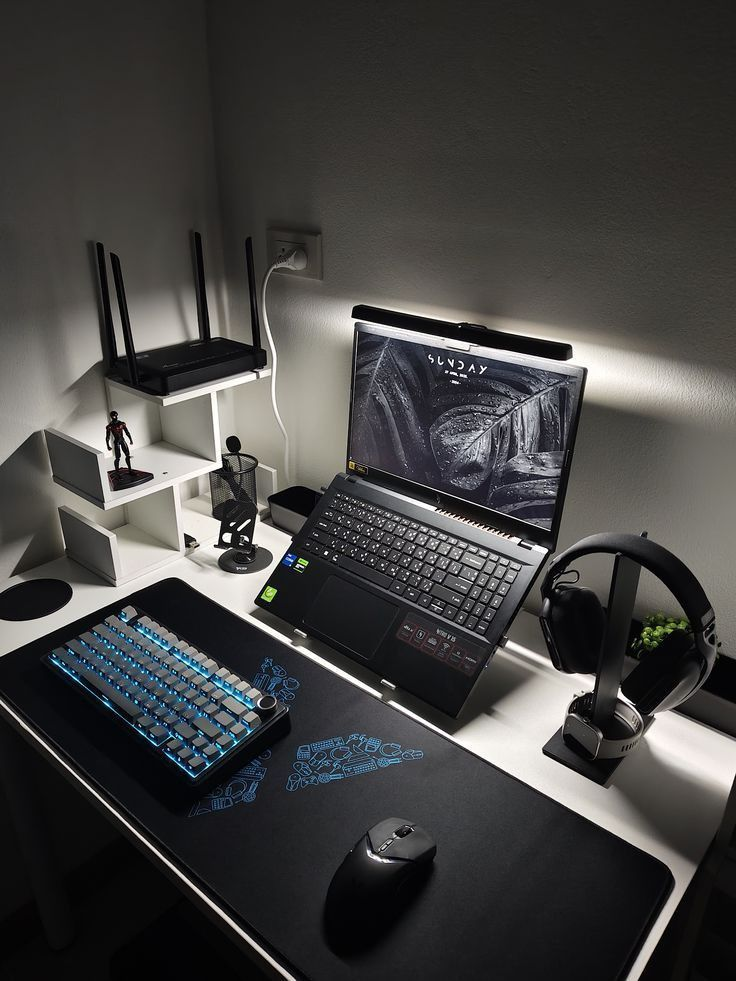
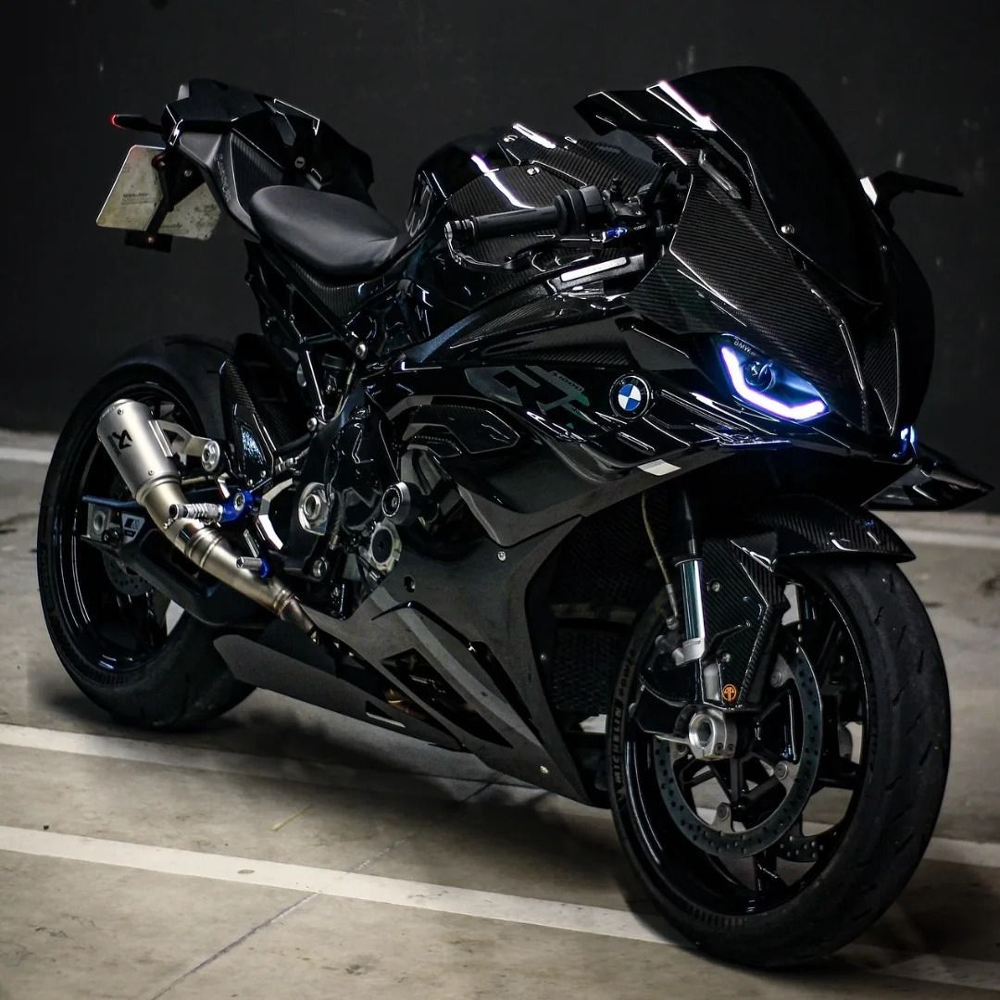
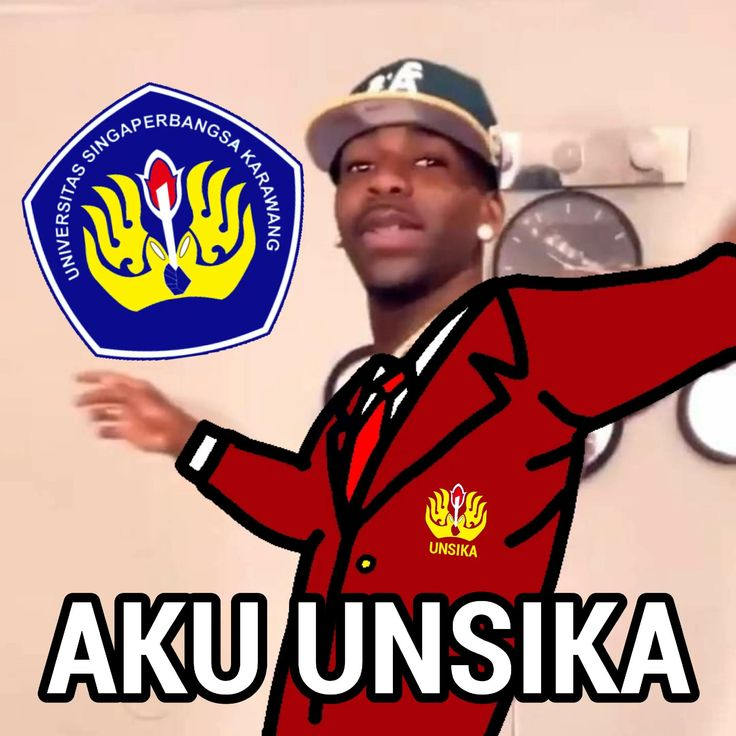

Barang kembali: Dompet
Dompet saya hilang di dekat kantin dan sudah pasrah. Ternyata ada yang melapor di sini, dua hari kemudian dompet beserta KTM-nya kembali utuh. Terima kasih banyak!
Cerita dari mahasiswa dan dosen yang barangnya kembali lewat Yaudah LostnFound.

Dompet saya hilang di dekat kantin dan sudah pasrah. Ternyata ada yang melapor di sini, dua hari kemudian dompet beserta KTM-nya kembali utuh. Terima kasih banyak!

Saya menemukan PC di parkiran dan langsung melapor lewat form. Tidak lama pemiliknya menghubungi, prosesnya mudah dan cepat.

Laptop tertinggal di perpustakaan dan saya panik karena ada data skripsi. Berkat website ini laptop kembali dalam sehari. Sangat membantu mahasiswa!

Awalnya ragu, tapi formnya simpel dan fotonya jelas. Motor saya ketemu dan diantar langsung oleh penemunya di area kampus.
Awalnya saya membawa kucing ke kampus karena takut kesepian tapi malah kabur ntah kemana, akhirnya ada yang menemukannya dan menghubungi saya melalui website ini.

Almamater saya tertinggal di aula. Untung ada yang melapor di sini. Tampilannya enak dipakai dan gampang cari barang.